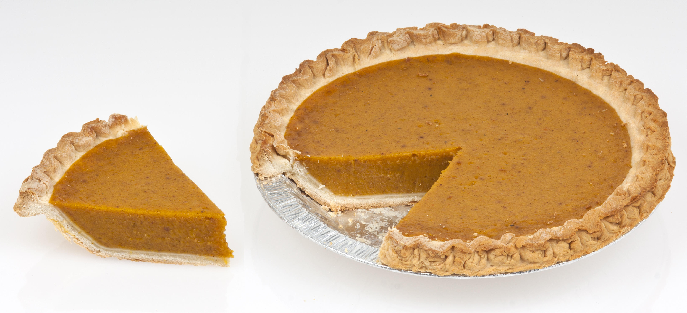

Pie de calabaza

Descripción
Este clásico pastel de calabaza usa crema de leche para lograr fácilmente un dulzor cremoso. Con un relleno sazonado con canela jengibre y nuez moscada.
Perfecto como postre en distintas festividades como navidad o año nuevo
Inicio
Ingredientes
- 1 lata de pure calabaza
- 1 lata de leche condensada
- 2 huevos AA
- 1 cucharadita de canela
- 1/2 cucharadita de jengibre
- 1/2 cucharadita de nuez moscada
- 1/2 cucharadita de sal
- 1 base para pie sin hornear
Paso a paso
- Reúne todos los ingredientes. Precalienta el horno a 220 grados centígrados.
- En un bol mediano, bata el puré de calabaza, la leche condensada azucarada, los huevos, la canela, el jengibre, la nuez moscada y la sal hasta obtener una mezcla homogénea.
- Coloca la base del pie sobre una bandeja para hornear con borde. Vierte el relleno sobre la base y golpea suavemente la bandeja contra la encimera para eliminar las burbujas de aire grandes. Hornea en el horno precalentado durante 15 minutos.
- Sin sacar el pastel del horno, reduce la temperatura a 175 °C. Hornea hasta que los bordes estén firmes y el centro se mueva ligeramente al agitarlo suavemente, de 35 a 40 minutos. Si los bordes de la masa se doran demasiado rápido, cúbrelos con papel aluminio.